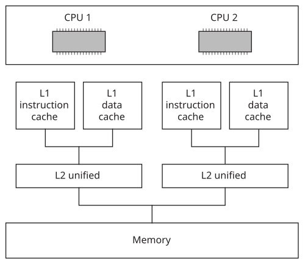

Information about the on-chip and off-chip cache system configuration
In addition to storing information about the configuration of the on-chip and off-chip cache system, the cacheattr area contains the control() kernel callout used for cache control operations.
flagsbelow.
Cache controlin the Kernel Callouts chapter).
The total number of bytes described by a particular cacheattr entry is defined by line_size × num_lines.
| This constant: | Means that the cache: |
|---|---|
| CACHE_FLAG_INSTR | Holds instructions |
| CACHE_FLAG_DATA | Holds data |
| CACHE_FLAG_UNIFIED | Holds both instructions and data |
| CACHE_FLAG_SHARED | Is shared between multiple processors in an SMP system |
| CACHE_FLAG_SNOOPED | Implements a bus-snooping protocol |
| CACHE_FLAG_VIRT_TAG | Is virtually tagged |
| CACHE_FLAG_VIRTUAL | Contains virtual addresses |
| CACHE_FLAG_WRITEBACK | Does write-back, not write-through |
| CACHE_FLAG_CTRL_PHYS | Takes physical addresses via its control() function |
| CACHE_FLAG_SUBSET | Obeys the subset property. This means that if something is in a given
cache level, it will also be in all lower-level caches.
This impacts cache flushing operations because a subsettedlevel can be effectively ignored by the control() function, which knows that the operation will be performed on the lower-level caches. |
| CACHE_FLAG_NONCOHERENT | Is noncoherent on SMP |
| CACHE_FLAG_NONISA | Doesn't obey ISA cache instructions |
| CACHE_FLAG_NOBROADCAST | Has operations that aren't broadcast on the bus for SMP |
| CACHE_FLAG_VIRT_IDX | Is virtually indexed |
| CACHE_FLAG_CTRL_PHYS64 | Control function takes 64-bit paddr
(see Cache controland Patcher routines) |
The cacheattr entries are organized in a linked list, with the next member indicating the index of the next lower cache entry. Some architectures have separate instruction and data caches at one level but a unified cache at another level. This linking of entries allows the system page to efficiently contain information for different cache levels.
The cpuinfo area's ins_cache and data_cache members provide index pointers to cacheattr tables that store details about the instruction cache and data cache.

/* CPUINFO */ cpuinfo [0].ins_cache = 0; cpuinfo [0].data_cache = 1; cpuinfo [1].ins_cache = 0; cpuinfo [1].data_cache = 1; /* CACHEATTR */ cacheattr [0].next = 2; cacheattr [0].linesize = linesize; cacheattr [0].numlines = numlines; cacheattr [0].flags = CACHE_FLAG_INSTR; cacheattr [1].next = 2; cacheattr [1].linesize = linesize; cacheattr [1].numlines = numlines; cacheattr [1].flags = CACHE_FLAG_DATA; cacheattr [2].next = CACHE_LIST_END; cacheattr [2].linesize = linesize; cacheattr [2].numlines = numlines; cacheattr [2].flags = CACHE_FLAG_UNIFIED;